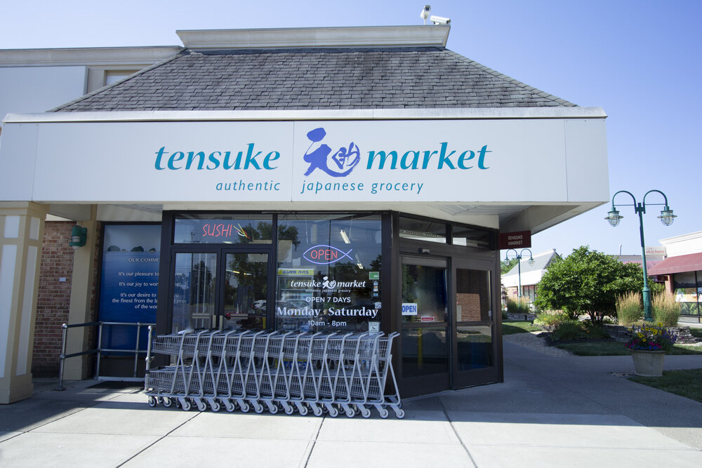
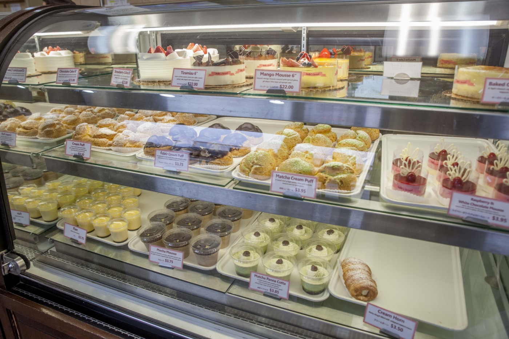
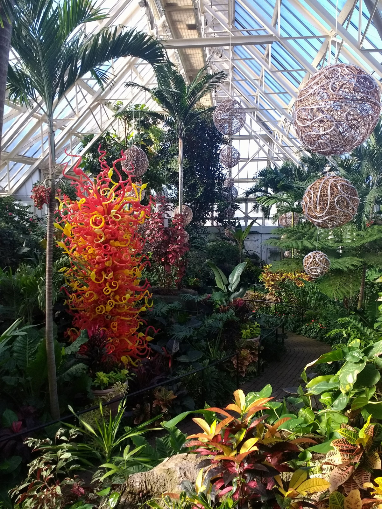
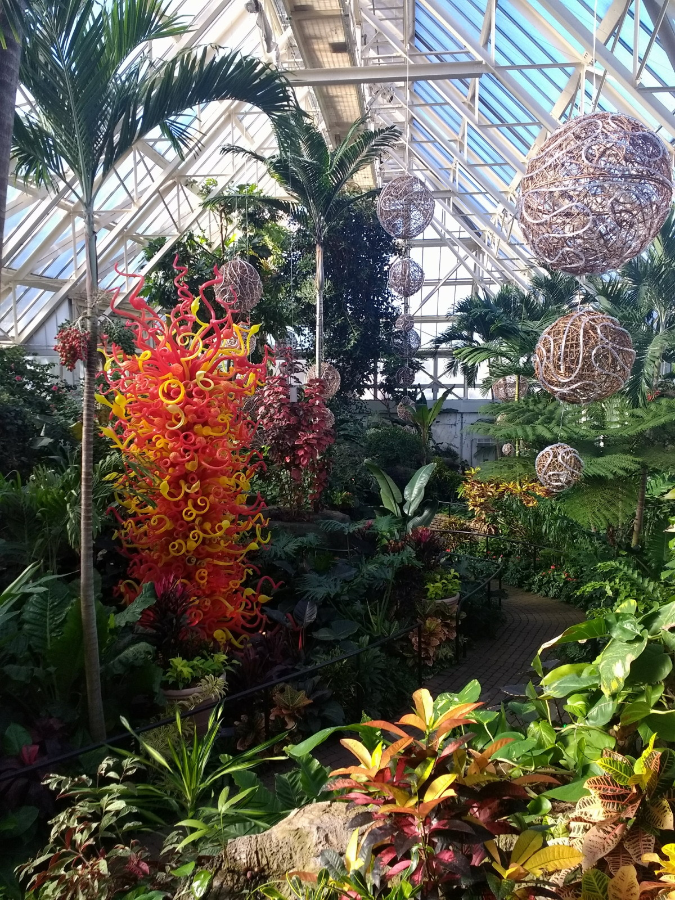

Japanese Market
 The Japanese Market is a very cool place to visit in Columbus. The market is a combination of six unique shops. Akai Hana is a fancy sit down Japanese sushi place. You can order various traditional Japanese entrees as well as various sizes of sushi boats. Belles Bakery is a lovely traditional bakery/Cafe with some Japanese treats to indulge in as well. Some of their delicious items include, moose, croissants, sandwiches, cakes, coffees, ice creams and crepes. Tenseuke Market is the main shop in the market. At Tensuke Market you can buy all kinds of groceries from Japan. They have a wide range of Japanese goods from alcohol to candy to fish to mochi to ramen. J-Avenue is a giftshop where you can buy a variety of Japanese gifts for people. They have various anime merchandise and stuffed animals, along with many other things such as, incense, shampoos, lotions, hair cremes, bowls, plates, mugs, and more. Sushi Ten is a togo sushi place that provides made to order sushi. Tensuke Express is a ramen shop where you can order sit down or carry out ramen. All in all the market is a great place for people to visit for food and fun. It also works out to be a great spot for dates. Click Here to learn more about the Japanese Market!
Franklin Park Conservatory
 

Franklin Park is cool